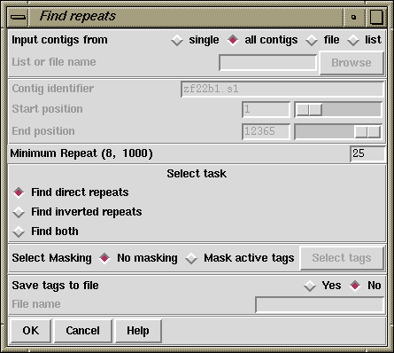

The purpose of this function (which is invoked from the Gap5 View menu) is to find exact repeats in contig consensus sequences. An exact repeat is defined as a run of consecutive identical ACGT characters; no mismatches or gaps are permitted.
If it has not already occurred, selection of this function will automatically transform the Contig Selector into the Contig Comparator.
See section Contig Comparator. Each match found is plotted as a diagonal line in the Contig Comparator. The length of the diagonal line is proportional to the length of the match.
If the match is for two contigs in the same orientation the diagonal will be parallel to the main diagonal, if they are not the line will be perpendicular to the main diagonal. The matches displayed in the Contig Comparator can be used to invoke the Join Editor (see section The Join Editor) or Contig Editors (see section Editing in Gap5), and an Information button will display data about the match in the Output window. e.g.
Repeat match
From contig xb54a3.s1(#26) at 78
With contig xb62h3.s1(#3) at 1
Length 37
This means that position 78 in the contig with xb54a3.s1 (reading number 26) at its left end matches 37 bases at position 1 in the contig with xb62h3.s1 (number 3) at its left end.

Users can elect to search a "single" contig, or compare "all contigs", or a subset of contigs defined in a list or a file. If "file" or "list" is selected the browse button is activated and gives access to file or list browsers. If they choose to analyse a single contig the dialogue concerned with selecting the contig and the region to search becomes activated. The "Minimum Repeat" defines the smallest match that the algorithm will report. The algorithm will search only for repeats in the forward direction "Find direct repeats", or only those in the reverse direction "Find inverted repeats", or both "Find both".
If "Mask active tags" is selected the "Select tags" button is activated. Clicking on this button will bring up a check box dialogue to enable the user to select the tags types they wish to activate. Masking the active tags means that all segments covered by tags that are "active" will not be used in the matching algorithm. A typical use of this mode is to avoid finding matches in segments covered by tags of type ALUS (ie segments thought to be Alu sequence) or that already covered by REPT tags.
See section Tag types.
After the search is complete clicking on "Yes" in the "Save tags to file" panel will activate the "File name" box and all repeats on the list will be written to a file. This file can be used with "Enter tags" (see section Enter Tags) to create REPT tags for all the repeats found. Note that "Enter tags" will remove all the results plotted in the contig comparator.
Note that the current version of Find Repeats has a limit to the number of repeats it can store. The limit depends on the current maximum consensus length, so if you want to increase the limit, reset the maximum consensus length. This can be done using the "Set maxseq" item in the "Options" menu.